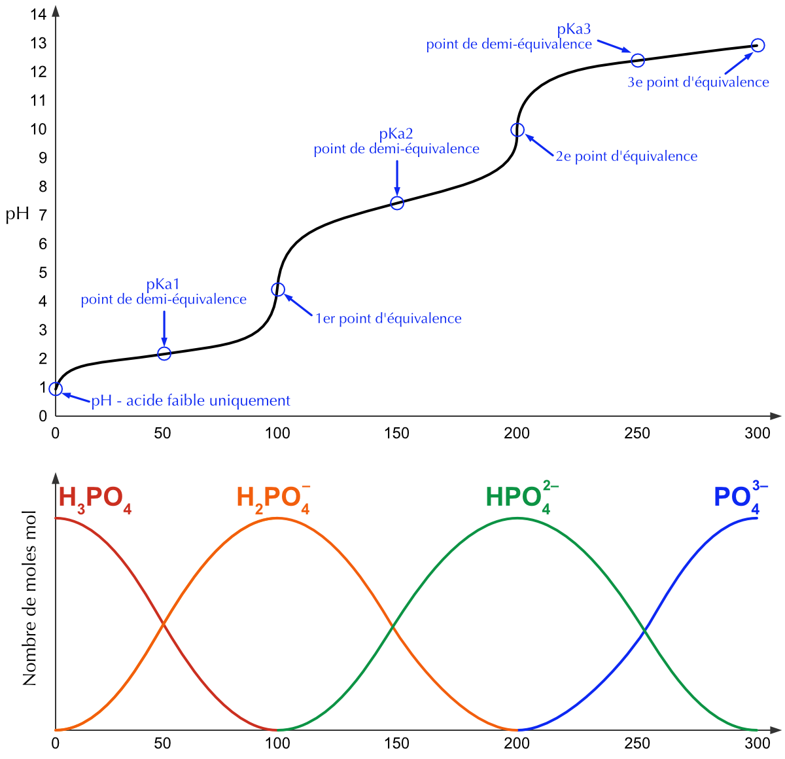

Chapitre 18 Le pH ou potentiel hydrogène
- Définir le pH et son échelle.
- Calculer le pH des acides forts et des bases fortes.
- Calculer le pH des acides faibles et des bases faibles.
- Calculer le pH des acides polyprotiques.
- Définir ce qu’est une solution tampon.
- Calculer le pH d’une solution tampon.
- Effectuer des calculs stœchiométriques sur la base d’une neutralisation donnée.
- Tracer une courbe de titrage en calculant le pH pour différents volumes de solution titrante ajoutés.
- Extraire les informations du tracé d’une courbe de titrage.
La concentration des ions H3O+ dans l’eau nous renseigne sur l’acidité ou la basicité d’une solution.
Les valeurs de ces concentrations (exprimées en [M]) sont très petites dans les solutions usuelles (par exemple 0.00025 [M] dans un jus d’orange). Pour éviter d’utiliser de telles valeurs, on définit une grandeur pratique, le pH.
Le pH (pour potentiel hydrogène) est défini comme le logarithme négatif de la concentration molaire des ions H3O+, exprimée en [M] :
\[ pH = - \log |\ce{H3O+}| \]
Si l’on reprend l’exemple du jus d’orange cité ci-dessus on obtient :
\[ pH = - \log 0.00025\ [M] = 3.60 \]
Remarque : la valeur du pH doit posséder autant de décimales qu’il y a de chiffres significatifs dans la valeur de la concentration.
En général, à 25°C :
| pH < 7 | la solution est acide |
| pH = 7 | la solution est neutre |
| pH > 7 | la solution est basique |

Figure 18.1: Échelle de pH
| pH | 1 | 2 | 3 | 4 | 5 | 6 | 7 | 8 | 9 | 10 | 11 | 12 | 13 |
|---|---|---|---|---|---|---|---|---|---|---|---|---|---|
| \(\ce{H+}\) | 10-1 | 10-2 | 10-3 | 10-4 | 10-5 | 10-6 | 10-7 | 10-8 | 10-9 | 10-10 | 10-11 | 10-12 | 10-13 |
| \(\ce{OH-}\) | 10-13 | 10-12 | 10-11 | 10-10 | 10-9 | 10-8 | 10-7 | 10-6 | 10-5 | 10-4 | 10-3 | 10-2 | 10-1 |
L’échelle de pH est une échelle logarithmique, ce qui signifie que la variation d’unité de pH fait varier la concentration en H3O+ d’un facteur de 10. De même, il est possible de déterminer la concentration en H3O+ (et donc en OH-) de toute solution, connaissant le pH :
\[ |\ce{H3O+}| = 10^{-pH} \]
18.1 pH des acides forts et des bases fortes
On se souvient que dans le cas d’un monoacide fort, on a |H3O+| = Cacide. Pour les acides polyprotiques, seul H2SO4 se comporte comme un acide fort et ce, uniquement pour son premier H+. Pour les monobases fortes, on a |OH-| = Cbase.
Le calcul des pH est facilité si l’on généralise l’usage des logarithmes, ce que l’on fait lorsque l’on utilise la lettre “p” comme préfixe, et qui signifie alors “-log”.
Avec cette convention, on parlera de pKa, de pKb, de pKe, de pCa, de pCb ou de pOH.
Pour résumer :
| Acide fort | \(pH = pC_a\) |
| Base forte | \(pH = pK_e\ –\ pC_b = 14\ –\ pOH\) |
Calculez le pH d’une solution
- de \(\ce{HBr}\) 0.002 [M]
- obtenue en diluant 10 fois une solution de \(\ce{HCl}\) initialement au pH 2 ?
- \[ \begin{split} |\ce{H3O+}| = 0.002\ [M] \end{split} \quad \begin{split} pH = - \log 0.002 \cong 2.7 \end{split} \]
- pH = 3 (échelle logarithmique)
Calculez la concentration d’une solution :
- de \(\ce{HNO3}\) de pH 1.6.
- obtenue en diluant 5 fois une solution de \(\ce{HCl}\) initialement au pH 3.
- \[ \begin{split} |\ce{H3O+}| = 10^{-pH} = 10^{-1.6} = 0.025\ [M] \end{split} \quad \begin{split} |\ce{HNO3}| = |\ce{H3O+}| \quad \text{(acide fort)} \end{split} \]
- \[ \begin{split} |\ce{HCl}| = |\ce{H3O+}| = 10^{-pH} = 10^{-3}\ [M] \end{split} \quad \begin{split} \text{dilution 5x} \Rightarrow \frac{10^{-3}}{5} = 2 \cdot 10^{-4}\ [M] \end{split} \]
Calculez le pH d’une solution d’hydroxyde de potassium 0.001 [M].
- \[ |\ce{OH-}| = |\ce{KOH}| = 0.001\ [M] \: \text{(base forte)} \] \[ \begin{split} pH = 14 - pOH &= 14 - ( - \log 0.001 ) \\ &= 11 \end{split} \qquad \text{ou} \qquad \begin{split} |\ce{H3O+}| &= \frac{10^{-14}}{|\ce{OH-}|} = 10^{-11} \\ pH &= - \log 10^{-11} = 11 \end{split} \]
Calculez la concentration d’une solution de \(\ce{NaOH}\) de pH = 9.3.
\[ \begin{split} |\ce{H3O+}| = 10^{-9.3} \end{split} \qquad \begin{split} |\ce{OH-}| &= \frac{10^{-14}}{|\ce{H3O+}|} \\ &= \frac{10^{-14}}{10^{-9.3}} = 10^{-4.7} = 2 \cdot 10^{-5}\ [M] \\ |\ce{NaOH}| &= |\ce{OH-}| = 2 \cdot 10^{-5}\ [M] \quad \text{(base forte)} \end{split} \]
Calculez le pH des solutions suivantes :
- \(\ce{HI}\) 0.025 [mol/L].
- \(\ce{Ca(OH)2}\) 0.003 [mol/L].
- \(\ce{NaOH}\) 2 [g/L].
- 0.315 mg de \(\ce{HNO3}\) dans 10 mL de solution
- \[ pH = - \log 0.025 \cong 1.6 \]
- \[ |\ce{OH^-}| = 2 \cdot |\ce{Ca(OH)2}| = 0.006 \Rightarrow pH = 14 + \log(0.006) = 11.78 \]
- \[ \begin{split} 2\ [g/L] &= 0.05\ [mol/L] \\ pH &= 14 + \log(0.05) \cong 12.7 \end{split} \]
- \[ \begin{split} n_{\ce{HNO3}} &= \frac{0.315 \cdot 10^{-3}\ [g]}{63\ [g/mol]} = 5 \cdot 10^{-6}\ [mol] \\ |\ce{HNO3}| &= \frac{n}{V} = \frac{5 \cdot 10^{-6}\ [mol]}{10 \cdot 10^{-3}\ [L]} = 5 \cdot 10^{-4}\ [M] \\ pH &= - \log |\ce{H3O+}| = - \log 5 \cdot 10^{-4} \cong 3.301 \end{split} \]
Calculez la concentration des solutions suivantes :
- \(\ce{HCl}\) de pH = 4.
- \(\ce{KOH}\) de pH = 12.
- \(|\ce{HCl}| = 10^{-4}\ [M]\)
- \(|\ce{H3O+}| = 10^{-12}\ [M]\) et \(|\ce{KOH}| = |\ce{OH-}| = 10^{-2}\ [M]\)
- Quelle masse de \(\ce{HCl}\) faut-il dissoudre dans 100 mL d’eau distillée pour obtenir un pH de 1.3 ?
- Que devient ce pH si l’on ajoute encore 100 mL d’eau à cette solution ?
- \[ \begin{split} |\ce{HCl}| &= |\ce{H3O+}| = 10^{-1.3}\ [M] = 5.01 \cdot 10^{-2}\ [M] \\ n_{\ce{HCl}} &= C \cdot V = 5.01 \cdot 10^{-2}\ [mol/L] \cdot 10^{-1}\ [L] = 5.01 \cdot 10^{-3}\ [mol] \\ m_{\ce{HCl}} &= n \cdot M = 5.01 \cdot 10^{-3}\ [mol] \cdot 36.45\ [g/mol] \cong 0.182\ [g] \end{split} \]
- Cela revient à diluer 2 fois. \[ \begin{split} |\ce{HCl}| &= |\ce{H3O+}| = \frac{5 \cdot 10^{-2}\ [mol/L]}{2} = 2.5 \cdot 10^{-2}\ [M] \\ pH &= - \log |\ce{H3O+}| = - \log 2.5 \cdot 10^{-2} \cong 1.6 \end{split} \]
On ajoute 250 mL d’eau à 20 mL d’une solution de base forte, de pH = 12. Quel sera le pH de la solution obtenue ?
\[ \begin{split} |\ce{H3O+}| = 10^{-12}\ [M] \end{split} \qquad \text{et} \qquad \begin{split} |\ce{OH-}| = 10^{-2}\ [M] \end{split} \] \[ n_{\ce{OH-}} = C \cdot V = 10^{-2}\ [M] \cdot 2 \cdot 10^{-3}\ [L] = 2 \cdot 10^{-5}\ [mol] \] Après dilution : \[ |\ce{OH-}| = \frac{n}{V} = \frac{2 \cdot 10^{-5}\ [mol]}{270 \cdot 10^{-3}\ [L]} \cong 7.41 \cdot 10^{-5}\ [M] \] \[ pH = 14 + \log(|\ce{OH-}|) = 14 + \log(7.41 \cdot 10^{-5}) \cong 9.87 \]
Calculez le pH d’une solution de \(\ce{HClO4}\) \(2 \cdot 10^{-3}\) M.
\[ pH = - log(|\ce{H3O+}|) = - log(2 \cdot 10^{-3}) \cong 2.7 \]
Calculez le pH d’une solution de \(\ce{KOH}\) \(2 \cdot 10^{-3}\) M.
\[ pH = 14 + log(|\ce{OH-}|) = 14 + log(2 \cdot 10^{-3}) \cong 11.3 \]
Calculez la concentration d’une solution de \(\ce{Ca(OH)2}\) de pH = 9.3.
\[ \begin{split} pOH = 14 - 9.3 = 4.7 \end{split} \qquad \begin{split} \ce{Ca(OH)2 -> Ca^{2+} + 2\ OH-} \end{split} \] \[ |\ce{OH-}| = 10^{-4.7} = 2 \cdot 10^{-5}\ [M] \Rightarrow |\ce{Ca(OH)2}| = \frac{1}{2} \cdot |\ce{OH-}| = 10^{-5}\ [M] \]
Quel volume d’eau faut-il ajouter à 25 mL d’une solution de \(\ce{HNO3}\) de pH = 2.5 pour amener ce pH à 3 ?
\[ |\ce{H3O+}|_{initial} = 10^{-2.5} \cong 3.16 \cdot 10^{-3}\ [M] \] \[ n_{\ce{H3O+}} = C \cdot V = 3.16 \cdot 10^{-3}\ [M] \cdot 25 \cdot 10^{-3}\ [L] \cong 7.91 \cdot 10^{-5}\ [mol] \] \[ |\ce{H3O+}|_{final} = \frac{n}{V} = \frac{7.91 \cdot 10^{-5}\ [mol]}{V} = 10^{-3}\ [M] \] \[ V = \frac{7.91 \cdot 10^{-5}\ [mol]}{10^{-3}\ [mol/L]} = 7.91 \cdot 10^{-2}\ [L] = 79.1\ [mL] \cong 79\ [mL] \] Il faut ajouter \(79\ [mL] - 25\ [mL] = 54\ [mL]\) d’eau.
18.2 pH des acides faibles et des bases faibles
Il est plus difficile de calculer le pH d’une solution d’acide faible car \(|H_{3}O^{+}| \neq Ca\) ou \(|OH^{-}| \neq Cb\) dans le cas d’une base faible. Pour calculer |H3O+|, ou |OH-|, il est nécessaire de résoudre un problème d’équilibre.
18.2.1 Exemple d’un acide faible
Prenons l’exemple d’une solution d’acide cyanhydrique HCN 0.100 [M], un acide faible, dont on souhaite déterminer le pH.
\[ \ce{HCN(aq) + H2O(l) <=> H3O+(aq) + CN^{-}(aq)} \qquad \text{avec } K_a = 4.9 \cdot 10^{-10} \]
Les conditions initiales, les variations et les conditions d’équilibre peuvent être synthétisées dans le tableau ci-dessous.
| \(\ce{HCN(aq)}\) | \(\ce{H3O+(aq)}\) | \(\ce{CN^{-}(aq)}\) | |
|---|---|---|---|
| Poportions | 1 | 1 | 1 |
| Cinitiale | 0.100 | ≈0.000 | 0.000 |
| \(\Delta\)C | -x | +x | +x |
| Cfinale | 0.100-x | x | x |
On approxime la concentration initiale des ions H3O+ comme nulle en négligeant la quantité des ions H3O+ provenant de l’autoprotolyse de l’eau.
La variable x représente la quantité d’acide qui se dissocie. Déterminons maintenant l’expression de la constante d’acidité Ka :
\[ K_a = \frac{|\ce{H3O+}| \cdot |\ce{CN-}|}{|\ce{HCN}|} = \frac{x \cdot x}{0.100 - x} = \frac{x^2}{0.100 - x} \]
Ka étant très faible, on va négliger la quantité d’acide dissociée (x) et donc, simplifier la constante :
\[ K_a = \frac{x^2}{0.100 - \cancel{x}} = \frac{x^2}{0.100} = 4.9 \cdot 10^{-10} \]
On obtient une équation du second degré. Il suffit de résoudre cette équation en x pour déterminer la valeur de |H3O+| :
\[ \begin{split} \frac{x^2}{0.100} = 4.9 \cdot 10^{-10} \end{split} \qquad \begin{split} \sqrt{\frac{x^2}{0.100}} &= \sqrt{4.9 \cdot 10^{-10}} \\ x &= \sqrt{4.9 \cdot 10^{-10} \cdot 0.100} = 7 \cdot 10^{-6}\ [M] \end{split} \]
Nous trouvons donc une valeur de |H3O+| égale à \(7 \cdot 10^{-6}\) [M].
L’approximation est bien valide puisque \(x \lll 0.100\) [M]. Le rapport entre la quantité dissociée et la concentration initiale d’acide doit être inférieur à 5% pour utiliser l’approximation. Dans cet exemple, nous avons :
\[ \frac{7 \cdot 10^{-6}}{0.100} = 0.007\% \]
Finalement, on calcule le pH :
\[ pH = - \log |\ce{H3O+}| = - \log 7 \cdot 10^{-6} = 5.15\ [-] \]
18.2.2 Exemple d’une base faible
Prenons l’exemple d’une solution d’ammoniaque NH3 0.200 [M], une base faible, dont on souhaite déterminer le pH. La démarche est la même que pour un acide faible.
\[ \ce{NH3(aq) + H2O(l) <=> NH4+(aq) + OH^{-}(aq)} \qquad \text{avec } K_b = 1.8 \cdot 10^{-5} \]
Les conditions initiales, les variations et les conditions d’équilibre peuvent être synthétisées dans le tableau ci-dessous.
| \(\ce{NH3(aq)}\) | \(\ce{NH4+(aq)}\) | \(\ce{OH^{-}(aq)}\) | |
|---|---|---|---|
| Poportions | 1 | 1 | 1 |
| Cinitiale | 0.200 | 0.000 | ≈0.000 |
| \(\Delta\)C | -x | +x | +x |
| Cfinale | 0.200-x | x | x |
A nouveau, on néglige l’autoprotolyse de l’eau.
La variable x représente la quantité de la base qui s’ionise (se dissocie). Déterminons maintenant l’expression de la constante de basicité Kb :
\[ K_b = \frac{|\ce{NH4+}| \cdot |\ce{OH-}|}{|\ce{NH3}|} = \frac{x \cdot x}{0.200 - x} = \frac{x^2}{0.200 - x} \]
À nouveau, on peut simplifier la constante :
\[ K_b = \frac{x^2}{0.200 - \cancel{x}} = \frac{x^2}{0.200} = 1.8 \cdot 10^{-5} \]
On obtient une équation du second degré. Il suffit de résoudre cette équation en x pour déterminer la valeur de |OH-| :
\[ \begin{split} \frac{x^2}{0.200} = 1.8 \cdot 10^{-5} \end{split} \qquad \begin{split} \sqrt{\frac{x^2}{0.200}} &= \sqrt{1.8 \cdot 10^{-5}} \\ x &= \sqrt{1.8 \cdot 10^{-5} \cdot 0.200} = 1.90 \cdot 10^{-3}\ [M] \end{split} \]
Nous trouvons donc une valeur de |OH-| égale à \(1.90 \cdot 10^{-3}\) [M].
L’approximation est bien valide puisque \(x \lll 0.200\) [M]. Le rapport entre la quantité protonnée et la concentration initiale de base doit être inférieur à 5% pour utiliser l’approximation. Dans cet exemple, nous avons :
\[ \frac{1.90 \cdot 10^{-3}}{0.200} = 0.95\% \]
Finalement, on calcule le pH en prenant \(|\ce{OH-}| = 1.90 \cdot 10^{-3}\) [M] :
\[ pH = 14 - pOH = 14 - \log |\ce{OH-}| = 14 - \log 1.90 \cdot 10^{-3} = 11.279\ [-] \]
Calculez le pH d’une solution de \(\ce{HClO2}\) 0.100 mol/L avec Ka = \(1.1 \cdot 10^{-2}\) M.
\[ \ce{HClO2 + H2O <=> H3O+ + ClO2-} \] \[ \begin{split} &\ce{HClO2}\\ C_i &= 0.100\ [M] \\ \Delta C &= - x\ [M] \\ C_f &= 0.100 - x\ [M] \\ \end{split} \qquad \begin{split} &\ce{H3O+}\\ C_i &= 0\ [M] \\ \Delta C &= + x\ [M] \\ C_f &= x\ [M] \\ \end{split} \qquad \begin{split} &\ce{ClO2-}\\ C_i &= 0\ [M] \\ \Delta C &= + x\ [M] \\ C_f &= x\ [M] \\ \end{split} \] \[ K_a = \frac{|\ce{H3O+}| \cdot |\ce{ClO2-}|}{|\ce{HClO2}|} = \frac{x \cdot x}{0.100-x} = \frac{x^2}{0.100-x} \] On approxime en négligeant le x : \[ \begin{split} K_a = \frac{x^2}{0.100-\cancel{x}} = \frac{x^2}{0.100} \end{split} \qquad \begin{split} \Rightarrow 1.1 \cdot 10^{-2} &= \frac{x^2}{0.100} \\ x &= \sqrt{1.1 \cdot 10^{-2} \cdot 0.100} \\ &= 3.32 \cdot 10^{-2}\ [mol/L] \end{split} \] L’approximation n’est pas valide : \(\frac{0.033}{0.100} \cdot 100\% = 33\% > 5\%\)
Sans appliquer d’approximation : \[ \begin{split} K_a = \frac{x^2}{0.100-x} \end{split} \qquad \begin{split} \Rightarrow 1.1 \cdot 10^{-2} &= \frac{x^2}{0.100-x} \\ 1.1 \cdot 10^{-2} \cdot (0.100-x) &= x^2 \\ 0.0011 - 0.011 \cdot x &= x^2 \\ x^2 + 0.011 \cdot x - 0.0011 &= 0 \end{split} \] Après résolution : \[ \begin{split} x = 0.028\ [M] \end{split} \qquad\qquad \begin{split} x = \cancel{-0.039}\ [M] \quad \text{non valable} \end{split} \] \[ \begin{split} |\ce{H3O+}| = x = 0.028\ [M] \end{split} \qquad\qquad \begin{split} pH &= - \log |\ce{H3O+}| \\ &= - \log 0.028 \cong 1.55 \end{split} \]
Une solution d’acide faible \(\ce{HA}\) 0.100 mol/L a un pH de 4.25. Déterminez la valeur de la constante d’acidité.
\[ |\ce{H3O+}| = 10^{-pH} = 10^{-4.5} \cong 5.6 \cdot 10^{-5}\ [M] \] \[ \ce{HA + H2O <=> A- + H3O+} \] \[ \begin{split} &\ce{HA}\\ C_i &= 0.100\ [M] \\ \Delta C &= - 5.6 \cdot 10^{-5}\ [M] \\ C_f &\approx 0.100\ [M] \\ \end{split} \qquad \begin{split} &\ce{A-}\\ C_i &= 0\ [M] \\ \Delta C &= + 5.6 \cdot 10^{-5}\ [M] \\ C_f &= 5.6 \cdot 10^{-5}\ [M] \\ \end{split} \qquad \begin{split} &\ce{ClO2-}\\ C_i &= 0\ [M] \\ \Delta C &= + 5.6 \cdot 10^{-5}\ [M] \\ C_f &= 5.6 \cdot 10^{-5}\ [M] \\ \end{split} \] \[ K_a = \frac{|\ce{H3O+}| \cdot |\ce{A-}|}{|\ce{HA}|} = \frac{5.6 \cdot 10^{-5} \cdot 5.6 \cdot 10^{-5}}{0.100} \cong 3.1 \cdot 10^{-8}\ [M] \]
Déterminez la concentration en OH- et le pH d’une solution de méthylamine (\(\ce{CH3NH2}\)) 0.33 mol/L.
\[ \ce{CH3NH2 + H2O <=> CH3NH3+ + OH-} \] \[ \begin{split} &\ce{CH3NH2}\\ C_i &= 0.33\ [M] \\ \Delta C &= - x\ [M] \\ C_f &= 0.33 - x\ [M] \\ \end{split} \qquad \begin{split} &\ce{CH3NH3+}\\ C_i &= 0\ [M] \\ \Delta C &= + x\ [M] \\ C_f &= x\ [M] \\ \end{split} \qquad \begin{split} &\ce{OH-}\\ C_i &= 0\ [M] \\ \Delta C &= + x\ [M] \\ C_f &= x\ [M] \\ \end{split} \] \[ K_b = \frac{|\ce{CH3NH3+}| \cdot |\ce{OH-}|}{|\ce{CH3NH2}|} = \frac{x \cdot x}{0.33 - x} \] On approxime en négligeant le x : \[ \begin{split} K_b = \frac{x \cdot x}{0.33 - \cancel{x}} = \frac{x^2}{0.33} = 4.4 \cdot 10^{-4} \end{split} \qquad \begin{split} \Rightarrow x &= \sqrt{4.4 \cdot 10^{-4} \cdot 0.33} \\ &= 0.012\ [M] \end{split} \] L’approximation est valide : \(\frac{0.012}{0.33} \cdot 100\% \cong 3.65\% < 5\%\) \[ \begin{split} |\ce{OH-}| = x = 0.012\ [M] \end{split} \qquad \begin{split} pOH &= - \log |\ce{OH-}| = - \log 0.012 = 1.92 \\ pH &= 14 - pOH = 14 - 1.92 = 12.08 \end{split} \]
Déterminez la concentration en OH-, le pH et le pOH d’une solution de carbonate 0.125 mol/L.
\[ \ce{CO3^{2-} + H2O <=> HCO3- + OH-} \] \[ \begin{split} &\ce{CO3^{2-}}\\ C_i &= 0.125\ [M] \\ \Delta C &= - x\ [M] \\ C_f &= 0.125 - x\ [M] \\ \end{split} \qquad \begin{split} &\ce{HCO3-}\\ C_i &= 0\ [M] \\ \Delta C &= + x\ [M] \\ C_f &= x\ [M] \\ \end{split} \qquad \begin{split} &\ce{OH-}\\ C_i &= 0\ [M] \\ \Delta C &= + x\ [M] \\ C_f &= x\ [M] \\ \end{split} \] \[ K_b = \frac{|\ce{HCO3-}| \cdot |\ce{OH-}|}{|\ce{CO3^{2-}}|} = \frac{x \cdot x}{0.125 - x} \] On approxime en négligeant le x : \[ \begin{split} K_b = \frac{x \cdot x}{0.125 - \cancel{x}} = \frac{x^2}{0.125} = 1.8 \cdot 10^{-4} \end{split} \qquad \begin{split} \Rightarrow x &= \sqrt{1.8 \cdot 10^{-4} \cdot 0.125} \\ &= 0.0047\ [M] \end{split} \] L’approximation est valide : \(\frac{0.0047}{0.125} \cdot 100\% \cong 3.83\% < 5\%\) \[ \begin{split} |\ce{OH-}| = x = 0.0047\ [M] \end{split} \qquad \begin{split} pOH &= - \log |\ce{OH-}| = - \log 0.0047 = 2.32 \\ pH &= 14 - pOH = 14 - 2.32 = 11.68 \end{split} \]
Une solution d’une base faible à 0.135 mol/L a un pH de 11.23. Déterminez la valeur de la constante de basicité.
\[ \begin{split} |\ce{OH-}| &= 10^{-pOH} \\ &= 10^{-2.77} \\ &= 0.0017\ [M] \end{split} \qquad \begin{split} &\text{avec} \\ pOH &= 14 - pH \\ &= 14 - 11.23 = 2.77 \end{split} \] \[ \ce{B + H2O <=> BH+ + OH-} \] \[ \begin{split} &\ce{B}\\ C_i &= 0.135\ [M] \\ \Delta C &= - x\ [M] \\ C_f &\approx 0.135\ [M] \\ \end{split} \qquad \begin{split} &\ce{BH+}\\ C_i &= 0\ [M] \\ \Delta C &= + x\ [M] \\ C_f &= 0.0017\ [M] \\ \end{split} \qquad \begin{split} &\ce{OH-}\\ C_i &= 0\ [M] \\ \Delta C &= + x\ [M] \\ C_f &= 0.0017\ [M] \\ \end{split} \] \[ K_b = \frac{|\ce{BH+}| \cdot |\ce{OH-}|}{|\ce{B}|} = \frac{0.0017 \cdot 0.0017}{0.135} = 2.14 \cdot 10^{-5} \]
18.3 pH des acides polyprotiques
Certains acides, comme l’acide sulfurique (H2SO4) ou encore l’acide phosphorique (\(\ce{H3PO4}\)) peuvent céder plus d’un proton. On les appelle des polyacides. Un polyacide se dissocie toujours de façon graduelle, soit un proton à la fois.
Par exemple, l’acide carbonique se dissocie en 2 temps :
\[ \begin{split} \ce{H2CO3(aq) + H2O(l) <=>[K_{a1}][4.3 $\cdot$ 10^{-7}] &HCO3^{-}(aq) + H3O+(aq)} \\ \ce{&HCO3^{-}(aq) + H2O(l) <=>[K_{a2}][4.6 $\cdot$ 10^{-11}] CO3^{2-}(aq) + H3O+(aq)} \end{split} \]
On remarque que la base conjuguée \(\ce{HCO3-}\) de la première réaction devient l’acide de la deuxième réaction. Pour un polyacide faible typique, on a Ka1 > Ka2 > Ka3 …
Les problèmes de calcul de pH de solutions contenant un polyacide se simplifient du fait que seule une des réactions contribue notablement à la formation de H3O+. De plus, la quantité de H3O+ produite à la première étape empêche la deuxième étape de produire davantage d’ion hydronium, selon le principe de Le Chatelier.
Figure 18.2: Dissociation de l’acide carbonique.
On pourra donc traiter les polyacides comme des monoacides, en ne prenant en compte que les protons libérés par le premier équilibre de déprotonation qui aura la plus grande constante d’équilibre Ka. Dans le cas particulier de l’acide sulfurique, le premier proton est entièrement libéré mais la deuxième déprotonation est non négligeable. Les deux déprotonations devront être prises en compte.
Écrivez les équations d’ionisation en trois étapes de l’acide phosphorique et donnez les constantes d’équilibre correspondantes.
- \[ \begin{split} \ce{H3PO4 + H2O <=> H2PO4- + H3O+} \end{split} \qquad \begin{split} K_{a1} = \frac{|\ce{H2PO4-}| \cdot |\ce{H3O+}|}{|\ce{H3PO4}|} = 7.6 \cdot 10^{-3} \end{split} \]
- \[ \begin{split} \ce{H2PO4- + H2O <=> HPO4^{2-} + H3O+} \end{split} \qquad \begin{split} K_{a2} = \frac{|\ce{HPO4^{2-}}| \cdot |\ce{H3O+}|}{|\ce{H2PO4-}|} = 6.2 \cdot 10^{-8} \end{split} \]
- \[ \begin{split} \ce{HPO4^{2-} + H2O <=> PO4^{3-} + H3O+} \end{split} \qquad \begin{split} K_{a3} = \frac{|\ce{PO4^{3-}}| \cdot |\ce{H3O+}|}{|\ce{HPO4^{2-}}|} = 4.3 \cdot 10^{-13} \end{split} \]
Calculez le pH des solutions d’acides polyprotiques suivantes :
- \(\ce{H3PO4}\) 0.350 [M]
- \(\ce{H2SO4}\) 0.125 [M]
- \[ \ce{H3PO4 + H2O <=> H2PO4- + H3O+} \] \[ \begin{split} &\ce{H3PO4}\\ C_i &= 0.350\ [M] \\ \Delta C &= - x\ [M] \\ C_f &= 0.350 - x\ [M] \\ \end{split} \qquad \begin{split} &\ce{H2PO4-}\\ C_i &= 0\ [M] \\ \Delta C &= + x\ [M] \\ C_f &= x\ [M] \\ \end{split} \qquad \begin{split} &\ce{H3O+}\\ C_i &= 0\ [M] \\ \Delta C &= + x\ [M] \\ C_f &= x\ [M] \\ \end{split} \] \[ K_{a1} = \frac{|\ce{H2PO4-}| \cdot |\ce{H3O+}|}{|\ce{H3PO4}|} = \frac{x \cdot x}{0.350 - x} \] On approxime en négligeant le x : \[ \begin{split} K_{a1} = \frac{x \cdot x}{0.350 - \cancel{x}} = \frac{x^2}{0.350} = 7.5 \cdot 10^{-3} \end{split} \qquad \begin{split} \Rightarrow x &= \sqrt{7.5 \cdot 10^{-3} \cdot 0.350} \\ &= 0.051\ [M] \end{split} \] L’approximation n’est pas valide : \(\frac{0.051}{0.350} \cdot 100\% \cong 14.57\% > 5\%\)
Sans appliquer d’approximation : \[ \begin{split} K_{a1} = \frac{x^2}{0.350-x} \end{split} \qquad \begin{split} \Rightarrow 7.5 \cdot 10^{-3} &= \frac{x^2}{0.350-x} \\ 7.5 \cdot 10^{-3} \cdot (0.350-x) &= x^2 \\ 2.625 \cdot 10^{-3} - 7.5 \cdot 10^{-3} \cdot x &= x^2 \\ x^2 + 7.5 \cdot 10^{-3} \cdot x - 2.625 \cdot 10^{-3} &= 0 \end{split} \] Après résolution : \[ \begin{split} x = 0.0476\ [M] \end{split} \qquad\qquad \begin{split} x = \cancel{-0.055}\ [M] \quad \text{non valable} \end{split} \] \[ \ce{H2PO4- + H2O <=> HPO4^{2-} + H3O+} \] \[ \begin{split} &\ce{H2PO4-}\\ C_i &= 0.0476\ [M] \\ \Delta C &= - x\ [M] \\ C_f &= 0.0476 - x\ [M] \\ \end{split} \qquad \begin{split} &\ce{HPO4^{2-}}\\ C_i &= 0\ [M] \\ \Delta C &= + x\ [M] \\ C_f &= x\ [M] \\ \end{split} \qquad \begin{split} &\ce{H3O+}\\ C_i &= 0.0476\ [M] \\ \Delta C &= + x\ [M] \\ C_f &= 0.0476 + x\ [M] \\ \end{split} \] \[ K_{a2} = \frac{|\ce{HPO4^{2-}}| \cdot |\ce{H3O+}|}{|\ce{H2PO4-}|} = \frac{x \cdot (0.0476 + x)}{0.0476 - x} \] On approxime en négligeant le x : \[ \begin{split} K_{a2} = \frac{x \cdot (0.0476 + \cancel{x})}{0.0476 - \cancel{x}} = \frac{x \cdot 0.0476}{0.0476} \end{split} \qquad \begin{split} \Rightarrow 6.2 \cdot 10^{-8} &= \frac{x \cdot 0.0476}{0.0476} \\ x &= 6.2 \cdot 10^{-8} [mol/L] \end{split} \] L’approximation est valide : \(\frac{6.2 \cdot 10^{-8}}{0.0476} \cdot 100\% \approx 0\% < 5\%\) \[ \begin{split} |\ce{H3O+}|_{total} &= 0.0476\ [M] + \cancel{6.2 \cdot 10^{-8}} \quad \text{(négligeable)} \\ &= 0.0476\ [M] \\ pH &= - \log |\ce{H3O+}| = - \log 0.0476 = 1.32 \end{split} \] b. \[ \ce{H2SO4 + H2O <=> HSO4- + H3O+} \] Première protonation, acide fort, \(|\ce{H3O+}| = 0.125\ [M]\).
Seconde protonation, acide faible. \[ \ce{HSO4- + H2O <=> SO4^{2-} + H3O+} \] \[ \begin{split} &\ce{HSO4-}\\ C_i &= 0.125\ [M] \\ \Delta C &= - x\ [M] \\ C_f &= 0.125 - x\ [M] \\ \end{split} \qquad \begin{split} &\ce{SO4^{2-}}\\ C_i &= 0\ [M] \\ \Delta C &= + x\ [M] \\ C_f &= x\ [M] \\ \end{split} \qquad \begin{split} &\ce{H3O+}\\ C_i &= 0.125\ [M] \\ \Delta C &= + x\ [M] \\ C_f &= 0.125 + x\ [M] \\ \end{split} \] \[ K_{a2} = \frac{|\ce{SO4^{2-}}| \cdot |\ce{H3O+}|}{|\ce{HSO4-}|} = \frac{x \cdot (0.125 + x)}{0.125 - x} = 1.2 \cdot 10^{-2} \] Après résolution : \[ \begin{split} x = 0.0102\ [M] \end{split} \qquad\qquad \begin{split} x = \cancel{-0.147}\ [M] \quad \text{non valable} \end{split} \] \[ \begin{split} |\ce{H3O+}|_{total} &= 0.125\ [M] + 0.0102\ [M] \\ &= 0.1352\ [M] \\ pH &= - \log |\ce{H3O+}| = - \log 0.1352 = 0.869 \end{split} \]
18.4 Les solutions tampons
Une solution tampon est une solution qui contient, en quantités importantes et similaires, un acide faible et sa base conjuguée (ou vice-versa). L’avantage de telles solutions est qu’elles sont capables de neutraliser l’ajout d’acide et/ou de base, résistant ainsi à de grande variation de pH. Par exemple, le sang contient un mélange d’acide carbonique (\(\ce{H2CO3}\)) et de sa base conjuguée, l’hydrogénocarbonate (\(\ce{HCO3-}\)), rendant ainsi son pH quasi constant, ce qui est vital pour nos cellules.
Pour illustrer ce phénomène, prenons l’exemple d’un tampon préparé à l’aide d’acide acétique (\(\ce{CH3COOH}\)) et d’acétate de sodium (\(\ce{CH3COONa}\)), sa base conjuguée, dissous dans de l’eau.

Figure 18.3: Formation d’une solution tampon
Image tirée du livre : Principe de chimie de Nivaldo Tro
Si l’on ajoute une base forte (NaOH par exemple) à ce tampon, l’acide acétique neutralisera l’ajout de cette base :
\[ \ce{OH^{-}(aq) + CH3COOH(aq) <=> H2O(l) + CH3COO^{-}(aq)} \]
On ne considère que l’ion OH-, puisque Na+ est un ion spectateur.
Le pH variera donc peu, pour autant que la quantité de base ajoutée ne soit pas supérieure à la quantité d’acide présent.
De la même manière, si l’on ajoute un acide fort (HCl par exemple) à ce tampon, l’anion acétate neutralisera l’ajout de cet acide :
\[ \ce{H3O+(aq) + CH3COO^{-}(aq) <=> H2O(l) + CH3COOH(aq)} \]
On ne considère que l’ion H3O+, puisque Cl- est un ion spectateur.
Le pH variera donc peu, pour autant que la quantité d’acide ajoutée ne soit pas supérieure à la quantité de base présente.
Par conséquent, les solutions tampons stabilisent le pH en fournissant source et piège à protons.
Parmi les solutions suivantes, laquelle est une solution tampon ? Justifiez.
- \(\ce{HNO2}\) 0.100 [M] et \(\ce{HCl}\) 0.100 [M]
- \(\ce{HNO2}\) 0.100 [M] et \(\ce{NaNO2}\) 0.100 [M]
- \(\ce{HNO2}\) 0.100 [M] et \(\ce{NaCl}\) 0.100 [M]
- \(\ce{HNO3}\) 0.100 [M] et \(\ce{NaNO3}\) 0.100 [M]
- \(\ce{HNO2}\) 0.100 [M] et \(\ce{HCl}\) 0.100 [M]
\(\ce{Cl-}\) n’est pas la base conjuguée de \(\ce{HNO2}\) et est une base inerte. - \(\ce{HNO2}\) 0.100 [M] et \(\ce{NaNO2}\) 0.100 [M]
Solution tampon. Cette solution contient des quantités significatives d’un acide faible et de sa base conjuguée. - \(\ce{HNO2}\) 0.100 [M] et \(\ce{NaCl}\) 0.100 [M]
\(\ce{Cl-}\) n’est pas la base conjuguée de \(\ce{HNO2}\) et est une base inerte. - \(\ce{HNO3}\) 0.100 [M] et \(\ce{NaNO3}\) 0.100 [M]
\(\ce{HNO3}\) est un acide fort.
18.4.1 pH des solutions tampons
Jusqu’à présent, nous avons appris à calculer le pH de solutions contenant soit un acide faible seul, soit une base faible seule. Voyons maintenant comment calculer le pH des solutions tampons contenant les deux à la fois.
Exemple
Prenons une solution tampon formée à partir d’acide acétique 0.200 [M] et d’acétate de sodium 0.100 [M]. L’acide acétique se dissocie selon l’équation ci-dessous :
\[ \ce{CH3COOH(aq) + H2O(l) <=> H3O+(aq) + CH3COO^{-}(aq)} \qquad \text{avec } K_a = 1.8 \cdot 10^{-5} \]
Les conditions initiales, les variations et les conditions d’équilibre peuvent être synthétisées dans le tableau ci-dessous.
| \(\ce{ CH3COOH}\) | \(\ce{H3O+}\) | \(\ce{CH3COO-}\) | |
|---|---|---|---|
| Poportions | 1 | 1 | 1 |
| Cinitiale | 0.200 | 0.000 | 0.100 |
| \(\Delta\)C | -x | +x | +x |
| Cfinale | 0.200-x | x | 0.100+x |
Déterminons maintenant l’expression de la constante d’acidité Ka :
\[ K_a = \frac{|\ce{H3O+}| \cdot |\ce{CH3COO-}|}{|\ce{CH3COOH}|} = \frac{x \cdot (0.100 + x)}{(0.200 - x)} \]
Comme Ka est faible, on peut négliger la quantité d’acide dissocié. On peut donc simplifier la constante :
\[ K_a = \frac{x \cdot (0.100 + \cancel{x})}{(0.200 - \cancel{x})} = \frac{x \cdot 0.100}{0.200} = \frac{x}{2} \]
En substituant Ka par sa valeur, on obtient une équation qu’il suffit de résoudre pour déterminer la valeur de x :
\[ \begin{split} 1.8 \cdot 10^{-5} = \frac{x}{2} \end{split} \qquad \begin{split} x = 1.8 \cdot 10^{-5} \cdot 2 = 3.6 \cdot 10^{-5}\ [mol/L] \end{split} \]
L’approximation est bien valide puisque \(x \lll 0.100\) [M]. Le rapport entre la quantité dissociée et la concentration initiale de base doit être inférieur à 5% pour utiliser l’approximation. Dans cet exemple, nous avons :
\[ \frac{3.6 \cdot 10^{-5}}{0.200} = 0.018\% \]
Finalement, on calcule le pH en prenant \(|\ce{H3O+}| = 3.6 \cdot 10^{-5}\) [M] :
\[ pH = - \log |\ce{H3O+}| = - \log 3.6 \cdot 10^{-5} = 4.44\ [-] \]
A titre de comparaison :
- Le pH d’une solution de \(\ce{CH3COOH}\) 0.200 mol/L est de 2.72 ;
- Le pH d’une solution de \(\ce{CH3COONa}\) 0.100 mol/L est de 8.9 ;
Ce résultat s’explique par le fait que la dissociation de l’acide acétique sera amoindrie par la présence de l’ion acétate. En effet, ce dernier déplacera l’équilibre vers la gauche, selon le principe de Le Chatelier. Le pH de la solution tampon sera donc moins acide.
18.4.2 Équation de Henderson-Hasselbalch
Généralisons l’exemple précédent :
\[ \ce{HA(aq) + H2O(l) <=> H3O+(aq) + A^{-}(aq)} \]
En isolant la concentration en H3O+ dans la constante d’acidité, on obtient :
\[ \begin{split} K_a = \frac{|\ce{H3O+}| \cdot |\ce{A-}|}{|\ce{HA}|} \end{split} \qquad \begin{split} |\ce{H3O+}| = K_a \cdot \frac{|\ce{HA}|}{|\ce{A-}|} \end{split} \]
En utilisant les propriétés des logarithmes dans le but de généraliser la formule du pH, on obtient :
\[ \begin{split} \log |\ce{H3O+}| &= \log K_a \cdot \frac{|\ce{HA}|}{|\ce{A-}|} \\ \log |\ce{H3O+}| &= \log K_a + \log \frac{|\ce{HA}|}{|\ce{A-}|} \\ - \log |\ce{H3O+}| &= - \log K_a - \log \frac{|\ce{HA}|}{|\ce{A-}|} \\ - \log |\ce{H3O+}| &= - \log K_a + \log \frac{|\ce{A-}|}{|\ce{HA}|} \\ pH &= pK_a + \log \frac{|\ce{A-}|}{|\ce{HA}|} \end{split} \]
L’équation de Henderson-Hasselbalch est acceptable avec les concentrations initiales dans le cas où l’approximation de x est valable (si \(\ce{|H3O+|}/\ce{|HA|} < 5\%\)). Dans le cas contraire, il faut recalculer précisément les concentrations \(\ce{|HA|}\) et \(\ce{|A^-|}\).
En règle générale, nous allons limiter la validité de l’équation de Henderson-Hasselbalch aux solutions dont les concentrations sont au moins 100 fois supérieures à leurs valeurs de \(K_a\).
Dans le cas d’une solution tampon d’une base faible en présence de son acide conjugué, il suffit de calculer le pKa à partir du pKb selon l’équation :
\[ pK_a + pK_b = 14 \quad \text{avec } pK_b = - \log K_b \]
Calculez le pH d’une solution tampon constituée d’une solution de \(\ce{HF}\) 0.15 [M] et de \(\ce{NaF}\) 0.15 [M].
Méthode basée sur l’équilibre :
\[ \ce{HF + H2O <=> H3O+ + F-} \] \[ \begin{split} &\ce{HF}\\ C_i &= 0.15\ [M] \\ \Delta C &= - x\ [M] \\ C_f &= 0.15 - x\ [M] \\ \end{split} \qquad \begin{split} &\ce{H3O+}\\ C_i &= 0\ [M] \\ \Delta C &= + x\ [M] \\ C_f &= x\ [M] \\ \end{split} \qquad \begin{split} &\ce{F-}\\ C_i &= 0.15\ [M] \\ \Delta C &= + x\ [M] \\ C_f &= 0.15 + x\ [M] \\ \end{split} \] \[ K_a = \frac{|\ce{F-}| \cdot |\ce{H3O+}|}{|\ce{HF}|} = \frac{(0.15 + x) \cdot x}{0.15 - x} \] On approxime en négligeant le x : \[ \begin{split} K_a &= \frac{(0.15 + \cancel{x}) \cdot x}{0.15 - \cancel{x}} = \frac{0.15 \cdot x}{0.15} = 6.8 \cdot 10^{-4} \\ x &= 6.8 \cdot 10^{-4}\ [M] \end{split} \] L’approximation est valide : \(\frac{6.8 \cdot 10^{-4}}{0.15} \cdot 100\% \cong 0.45\% < 5\%\) \[ \begin{split} |\ce{H3O+}| = x = 6.8 \cdot 10^{-4}\ [M] \end{split} \qquad\qquad \begin{split} pH &= - \log |\ce{H3O+}| \\ &= - \log 6.8 \cdot 10^{-4} \cong 3.17 \end{split} \]
Méthode basée sur l’équation de Henderson-Hasselbalch :
\[ \begin{split} pH = pK_a + \log \frac{|\ce{A-}|}{|\ce{HA}|} \end{split} \qquad \begin{split} \ce{HA} \Rightarrow &\ \ce{HF} \\ \ce{A-} \Rightarrow &\ \ce{F-} \\ K_a = &\ 6.8 \cdot 10^{-4} \end{split} \qquad \begin{split} pH &= pK_a + \log \frac{|\ce{F-}|}{|\ce{HF}|} \\ &= - \log 6.8 \cdot 10^{-4} + \log \frac{0.15}{0.15} = 3.17 \\ \end{split} \]
Calculez le pH d’une solution tampon constituée d’une solution de \(\ce{NH3}\) 0.12 [M] et de \(\ce{NH4Cl}\) 0.18 [M].
Méthode basée sur l’équilibre :
\[ \ce{NH3 + H2O <=> NH4+ + OH-} \] \[ \begin{split} &\ce{NH3}\\ C_i &= 0.12\ [M] \\ \Delta C &= - x\ [M] \\ C_f &= 0.12 - x\ [M] \\ \end{split} \qquad \begin{split} &\ce{NH4+}\\ C_i &= 0.18\ [M] \\ \Delta C &= + x\ [M] \\ C_f &= 0.18 + x\ [M] \\ \end{split} \qquad \begin{split} &\ce{OH-}\\ C_i &= 0\ [M] \\ \Delta C &= + x\ [M] \\ C_f &= x\ [M] \\ \end{split} \] \[ K_b = \frac{|\ce{OH-}| \cdot |\ce{NH4+}|}{|\ce{NH3}|} = \frac{x \cdot (0.18 + x)}{0.12 - x} \] On approxime en négligeant le x : \[ \begin{split} K_b &= \frac{x \cdot (0.18 + \cancel{x})}{0.12 - \cancel{x}} = \frac{x \cdot 0.18}{0.12} = 1.66 \cdot 10^{-5} \\ x &= 1.66 \cdot 10^{-5} \cdot \frac{0.12}{0.18} = 1.1 \cdot 10^{-5}\ [M] \end{split} \] L’approximation est valide : \(\frac{1.1 \cdot 10^{-5}}{0.12} \cdot 100\% \cong 0.01\% < 5\%\) \[ \begin{split} |\ce{OH-}| = x = 1.1 \cdot 10^{-5}\ [M] \end{split} \qquad \begin{split} pOH &= - \log |\ce{OH-}| = - \log 1.1 \cdot 10^{-5} = 4.96 \\ pH &= 14 - pOH = 14 - 4.96 = 9.04 \end{split} \]
Méthode basée sur l’équation de Henderson-Hasselbalch : \[ \begin{split} pH = pK_a + \log \frac{|\ce{A-}|}{|\ce{HA}|} \end{split} \qquad \begin{split} \ce{HA} \Rightarrow &\ \ce{NH4+} \\ \ce{A-} \Rightarrow &\ \ce{NH3} \\ pK_b = &\ -\log(K_b) = 4.78 \\ pK_a = &\ 14 - 4.78 = 9.22 \end{split} \qquad \begin{split} pH &= pK_a + \log \frac{|\ce{NH3}|}{|\ce{NH4+}|} \\ &= 9.22 + \log \frac{0.12}{0.18} = 9.04 \\ \end{split} \]
Un tampon contient un acide faible HA (dont le pKa est de 4.82) et sa base conjuguée A-. Le pH du tampon est de 4.25. Parmi les énoncés suivants concernant les concentrations relatives de l’acide et de la base conjuguée dans la solution tampon, lequel est vrai ?
- |HA| > |A-|
- |HA| = |A-|
- |HA| < |A-|
Quand l’acide et sa base conjuguée sont présents en mêmes quantités, pH = pKa. Ici, le pH est plus acide (4.25 < 4.82) ce qui signifie que |HA| > |A-|.
Calculez le pH d’une solution tampon constituée d’une solution de \(\ce{HCN}\) 0.250 [M] et de \(\ce{KCN}\) 0.170 [M]. Utilisez la méthode basée sur l’équilibre et la méthode basée sur l’équation de Henderson-Hasselbalch.
Méthode basée sur l’équilibre : \[ \ce{HCN + H2O <=> H3O+ + CN-} \] \[ \begin{split} &\ce{HCN}\\ C_i &= 0.250\ [M] \\ \Delta C &= - x\ [M] \\ C_f &= 0.250 - x\ [M] \\ \end{split} \qquad \begin{split} &\ce{H3O+}\\ C_i &= 0\ [M] \\ \Delta C &= + x\ [M] \\ C_f &= x\ [M] \\ \end{split} \qquad \begin{split} &\ce{CN-}\\ C_i &= 0.170\ [M] \\ \Delta C &= + x\ [M] \\ C_f &= 0.170 + x\ [M] \\ \end{split} \] \[ K_a = \frac{|\ce{CN-}| \cdot |\ce{H3O+}|}{|\ce{HCN}|} = \frac{x \cdot (0.170 + x)}{0.250 - x} \] On approxime en négligeant le x : \[ \begin{split} K_a &= \frac{x \cdot (0.170 + \cancel{x})}{0.250 - \cancel{x}} = \frac{0.170 \cdot x}{0.250} = 6.0 \cdot 10^{-10} \\ x &= 6.0 \cdot 10^{-10} \cdot \frac{0.250}{0.170} = 8.8 \cdot 10^{-10}\ [M] \end{split} \] L’approximation est valide : \(\frac{8.8 \cdot 10^{-10}}{0.250} \cdot 100\% \cong 3.52 \cdot 10^{-7}\% < 5\%\) \[ \begin{split} |\ce{H3O+}| = x = 7.1 \cdot 10^{-10}\ [M] \end{split} \qquad\qquad \begin{split} pH &= - \log |\ce{H3O+}| \\ &= - \log 8.8 \cdot 10^{-10} \cong 9.056 \end{split} \]
Méthode basée sur l’équation de Henderson-Hasselbalch :
\[ \begin{split} pH = pK_a + \log \frac{|\ce{A-}|}{|\ce{HA}|} \end{split} \qquad \begin{split} \ce{HA} \Rightarrow &\ \ce{HCN} \\ \ce{A-} \Rightarrow &\ \ce{CN-} \\ K_a = &\ 6.0 \cdot 10^{-10} \end{split} \qquad \begin{split} pH &= pK_a + \log \frac{|\ce{CN-}|}{|\ce{HCN}|} \\ &= - \log 6.0 \cdot 10^{-10} + \log \frac{0.17}{0.25} = 9.054 \\ \end{split} \]
Calculez le pH d’une solution résultant du mélange de 60.0 [mL] de \(\ce{HCOOH}\) 0.250 [M] et de 15 [mL] de \(\ce{HCOONa}\) 0.500 [M].
\[ \begin{split} |\ce{HCOOH}| &= \frac{0.06\ [L] \cdot 0.250\ [mol/L]}{0.075\ [L]} = 0.200\ [mol/L] \\ |\ce{HCOO-}| &= \frac{0.015\ [L] \cdot 0.500\ [mol/L]}{0.075\ [L]} = 0.100\ [mol/L] \end{split} \] Méthode basée sur l’équilibre : \[ \ce{HCOOH + H2O <=> H3O+ + HCOO-} \] \[ \begin{split} &\ce{HCOOH}\\ C_i &= 0.200\ [M] \\ \Delta C &= - x\ [M] \\ C_f &= 0.200 - x\ [M] \\ \end{split} \qquad \begin{split} &\ce{H3O+}\\ C_i &= 0\ [M] \\ \Delta C &= + x\ [M] \\ C_f &= x\ [M] \\ \end{split} \qquad \begin{split} &\ce{HCOO-}\\ C_i &= 0.100\ [M] \\ \Delta C &= + x\ [M] \\ C_f &= 0.100 + x\ [M] \\ \end{split} \] \[ K_a = \frac{|\ce{HCOO-}| \cdot |\ce{H3O+}|}{|\ce{HCOOH}|} = \frac{x \cdot (0.100 + x)}{0.200 - x} \] On approxime en négligeant le x : \[ \begin{split} K_a &= \frac{x \cdot (0.100 + \cancel{x})}{0.200 - \cancel{x}} = \frac{0.100 \cdot x}{0.200} = 1.8 \cdot 10^{-4} \\ x &= 1.8 \cdot 10^{-4} \cdot \frac{0.200}{0.100} = 3.6 \cdot 10^{-4}\ [M] \end{split} \] L’approximation est valide : \(\frac{3.6 \cdot 10^{-4}}{0.200} \cdot 100\% \cong 0.18\% < 5\%\) \[ \begin{split} |\ce{H3O+}| = x = 3.6 \cdot 10^{-4}\ [M] \end{split} \qquad\qquad \begin{split} pH &= - \log |\ce{H3O+}| \\ &= - \log 3.6 \cdot 10^{-4} \cong 3.44 \end{split} \]
Méthode basée sur l’équation de Henderson-Hasselbalch :
\[ \begin{split} pH = pK_a + \log \frac{|\ce{A-}|}{|\ce{HA}|} \end{split} \qquad \begin{split} \ce{HA} \Rightarrow &\ \ce{HCOOH} \\ \ce{A-} \Rightarrow &\ \ce{HCOO-} \\ K_a = &\ 1.8 \cdot 10^{-4} \end{split} \qquad \begin{split} pH &= pK_a + \log \frac{|\ce{HCOO-}|}{|\ce{HCOOH}|} \\ &= - \log 1.8 \cdot 10^{-4} + \log \frac{0.100}{0.200} = 3.44 \\ \end{split} \]
18.4.3 Addition acide-base à une solution tampon
Une solution tampon a la propriété d’avoir un pH stable du fait de sa faculté à absorber acidité et basicité grâce aux deux particules conjuguées.
Exemple
Prenons l’exemple du tampon \(\ce{NH3}\) 0.25 mol/L et \(\ce{NH4Cl}\) 0.40 mol/L avec un \(K_b = 1.8 \cdot 10^{-5}\).
Par conséquent :
\[ \begin{split} pK_b = - \log K_b = 4.74 \end{split} \qquad\text{et}\qquad \begin{split} pKa = 14 – 4.74 = 9.26 \end{split} \]
\[ pH = pK_a + \log \frac{|\ce{A-}|}{|\ce{HA}|} = 9.26 + \log \frac{0.25}{0.40} = 9.06 \]
Quel sera l’effet sur le pH de l’ajout de 0.10 mol de \(\ce{HCl}\) à 1 L de tampon ?
HCl est un acide fort entièrement dissocié :
\[ \ce{HCl(aq) + H2O(l) -> H3O+(aq) + Cl^{-}(aq)} \]
Il en résulte un ajout de 0.1 mol de \(\ce{H3O+}\) dans 1L, soit + 0.1 mol/L.
L’ajout d’acide augmente d’autant la quantité d’acide et diminue d’autant la quantité de base. Par conséquent, le calcul du nouveau pH se fera avec les concentrations suivantes :
\[ |\ce{NH3}| = |\ce{NH3}|_{initial} – |\text{acide ajouté}| = 0.25\ [M] – 0.10\ [M] = 0.15\ [M] \]
\[ |\ce{NH4+}| = |\ce{NH4+}|_{initial} + |\text{acide ajouté}| = 0.25\ [M] + 0.10\ [M] = 0.35\ [M] \]
\[ pH = pK_a + \log \frac{|\ce{A-}|}{|\ce{HA}|} = 9.26 + \log \frac{0.15}{0.50} = 8.74 \]
On remarquera que l’addition de \(\ce{HCl}\) n’a que faiblement diminué la valeur du pH. L’abaissement du pH est cohérent avec le fait qu’un acide fort a été ajouté.
- Calculez le pH d’une solution \(\ce{HNO2}\) 0.5 mol/L et \(\ce{KNO2}\) 0.1 mol/L.
- Sachant qu’une solution \(\ce{HNO2}\) 0.5 mol/L a un pH de 1.8, votre résultat vous paraît-il cohérent ? Justifiez.
- Calculez le pH si l’on ajoute 0.3 g de \(\ce{NaOH}\) dans 20 mL de solution tampon.
- Méthode basée sur l’équilibre : \[ \ce{HNO2 + H2O <=> H3O+ + NO2-} \] \[ \begin{split} &\ce{HNO2}\\ C_i &= 0.5\ [M] \\ \Delta C &= - x\ [M] \\ C_f &= 0.5 - x\ [M] \\ \end{split} \qquad \begin{split} &\ce{H3O+}\\ C_i &= 0\ [M] \\ \Delta C &= + x\ [M] \\ C_f &= x\ [M] \\ \end{split} \qquad \begin{split} &\ce{NO2-}\\ C_i &= 0.1\ [M] \\ \Delta C &= + x\ [M] \\ C_f &= 0.1 + x\ [M] \\ \end{split} \] \[ K_a = \frac{|\ce{NO2-}| \cdot |\ce{H3O+}|}{|\ce{HNO2}|} = \frac{x \cdot (0.1 + x)}{0.5 - x} \] On approxime en négligeant le x : \[ \begin{split} K_a &= \frac{x \cdot (0.1 + \cancel{x})}{0.5 - \cancel{x}} = \frac{0.1 \cdot x}{0.5} = 4.6 \cdot 10^{-4} \\ x &= 4.6 \cdot 10^{-4} \cdot \frac{0.5}{0.1} = 2.3 \cdot 10^{-3}\ [M] \end{split} \] L’approximation est valide : \(\frac{2.3 \cdot 10^{-3}}{0.5} \cdot 100\% \cong 0.46\% < 5\%\) \[ \begin{split} |\ce{H3O+}| = x = 2.3 \cdot 10^{-3}\ [M] \end{split} \qquad\qquad \begin{split} pH &= - \log |\ce{H3O+}| \\ &= - \log 2.3 \cdot 10^{-3} \cong 2.6 \end{split} \]
Méthode basée sur l’équation de Henderson-Hasselbalch :
\[ \begin{split} pH = pK_a + \log \frac{|\ce{A-}|}{|\ce{HA}|} \end{split} \qquad \begin{split} \ce{HA} \Rightarrow &\ \ce{HNO2} \\ \ce{A-} \Rightarrow &\ \ce{NO2-} \\ K_a = &\ 4.6 \cdot 10^{-4} \end{split} \qquad \begin{split} pH &= pK_a + \log \frac{|\ce{NO2-}|}{|\ce{HNO2}|} \\ &= - \log 4.6 \cdot 10^{-4} + \log \frac{0.1}{0.5} = 2.6 \\ \end{split} \]
Oui, une solution tampon sera moins acide que la solution acide.
\[ \begin{split} M_{\ce{NaOH}} = 40.008\ [g/mol] \end{split} \qquad \begin{split} n_{\ce{NaOH}} &= \frac{m_{\ce{NaOH}}}{M_{\ce{NaOH}}} = \frac{0.3\ [g]}{40.008\ [g/mol]} = 0.0075\ [mol] \\ |\ce{NaOH}| &= \frac{n_{\ce{NaOH}}}{V_{solution}} = \frac{0.0075\ [mol]}{0.020\ [L]} = 0.375\ [M] \end{split} \] \[ \begin{split} |\ce{HNO2}| &= 0.5 - 0.375 = 0.125\ [M] \\ |\ce{NO2-}| &= 0.1 + 0.375 = 0.475\ [M] \end{split} \] \[ \begin{split} pH &= pK_a + \log \frac{|\ce{NO2-}|}{|\ce{HNO2}|} \\ &= - \log 4.6 \cdot 10^{-4} + \log \frac{0.475}{0.125} = 3.92 \\ \end{split} \]
18.4.4 Pouvoir tampon
Le pouvoir tampon d’une solution correspond à la quantité d’acide ou de base d’un système qui peut être absorbée sans qu’il y ait de variation significative du pH. Un tampon, dont le pouvoir tampon est élevé, contient les éléments constitutifs du tampon en grandes quantités. Il peut ainsi absorber une quantité relativement importante d’acide ou de base en n’étant soumis qu’à une faible variation de pH.
La zone de pH dans lequel le tampon fonctionne s’étend de \(pH = pKa \pm 1\).
Selon le pH nécessaire, on devra donc choisir un couple dont le pKa se situe proche du pH, des concentrations en acide et base proches et des concentrations importantes pour augmenter le pouvoir tampon.
Un chimiste souhaite obtenir une solution tampon à pH = 4.3. Il peut choisir parmi les acides suivants (et leurs sels sodiques) :
- acide chloracétique : \(K_a = 1.35 \cdot 10^{-3}\)
- acide propanoïque : \(K_a = 1.3 \cdot 10^{-5}\)
- acide benzoïque : \(K_a = 6.4 \cdot 10^{-5}\)
- acide hypochloreux : \(K_a = 3.5 \cdot 10^{-8}\)
- Lequel de ces acides préférera-t-il pour préparer sa solution tampon ?
- Proposez des molarités d’acide et de sel qui permettront de la préparer.
- Il faut : \[ pH = pK_a \Rightarrow pK_a = 4.3 \Rightarrow K_a = 10^{-4.3} = 5.01 \cdot 10^{-5} \]
- pk_a = 2.9
- pk_a = 4.9
- pk_a = 4.2 (Le chimiste préfèrera l’acide benzoïque)
- pk_a = 7.5
- \[ \begin{split} pH = pK_a + \log \frac{|\ce{A-}|}{|\ce{HA}|} \end{split} \qquad \begin{split} \ce{HA} \Rightarrow &\ \ce{C6H5COOH} \\ \ce{A-} \Rightarrow &\ \ce{C6H5COO-} \\ K_a = &\ 6.4 \cdot 10^{-5} \end{split} \] \[ \begin{split} pH &= pK_a + \log \frac{|\ce{C6H5COO-}|}{|\ce{C6H5COOH}|} \\ 4.3 &= 4.2 + \log \frac{|\ce{C6H5COO-}|}{|\ce{C6H5COOH}|} \end{split} \qquad \begin{split} \log \frac{|\ce{C6H5COO-}|}{|\ce{C6H5COOH}|} &= 0.1 \\ \frac{|\ce{C6H5COO-}|}{|\ce{C6H5COOH}|} &= 10^{0.1} = 1.26 \\ \Rightarrow |\ce{C6H5COO-}| &= 1.26 \cdot |\ce{C6H5COOH}| \end{split} \]
Par exemple : \[ \begin{split} |\ce{C6H5COO-}| &= 1.26\ [M] \\ |\ce{C6H5COOH}| &= 1.00\ [M] \end{split} \]
18.5 Titrages et courbes de pH
Un titrage acide-base consiste à ajouter lentement une solution acide (ou basique) de concentration connue à une solution basique (ou acide) de concentration inconnue. C’est une technique de dosage basée sur les réactions de neutralisation. En effet, il est possible de mettre en évidence le moment où la quantité de base est stœchiométriquement égale à la quantité d’acide. On parle alors de point d’équivalence. Ce point peut être mis en évidence à l’aide de pH-mètre mais également à l’aide d’indicateur coloré (substance qui change de couleur en fonction du pH).
Figure 18.4: Titrage acide-base et courbe de titrage
Image tirée du livre : Principe de chimie de Nivaldo Tro
Le pH varie donc tout au long d’un titrage. Une courbe de titrage (ou courbe de pH) est un graphique sur lequel on reporte la valeur du pH tout au long du titrage. La courbe de la figure 3 illustre un titrage d’une solution inconnue de HCl par une solution connue de NaOH. Comme prévu, au départ, le pH est acide puisqu’il correspond à la solution de HCl. Le pH augmente avec l’ajout de NaOH car ce dernier neutralise l’acide. Au point d’équivalence, le HCl a été entièrement neutralisé et un petit ajout supplémentaire de NaOH fait fortement augmenter le pH (puisque désormais, il y a un excès de base).
La forme de la courbe de titrage est influencée par de nombreux paramètres que nous expliquerons ici.
18.5.1 Titrage d’un acide fort par une base forte
Exemple
\[ \ce{HCl(aq) + NaOH(aq) -> NaCl(aq) + H2O(l)} \]
La courbe observée lorsque l’on ajoute dans un acide fort, petit à petit, une base forte en relevant le pH en fonction du volume est la suivante :
Figure 18.5: Neutralisation d’un acide fort par une base forte
Avant l’ajout de base, seul l’acide fort est présent dans le bécher. Ainsi, le calcul du pH sera :
\[ pH = - \log C_a \]
Avant le point équivalent, seul l’acide influencera le pH, mais celui-ci étant dilué, il faudra calculer sa concentration exacte :
\[ \begin{split} pH = - \log C_a^{*} \end{split} \qquad \begin{split} C_a^{*} = \frac{n_a^{*}}{V_{tot}} \qquad \text{avec } n_a^{*} = n_a - n_b = C_a \cdot V_a - C_b \cdot V_b \end{split} \]
Au point équivalent, les ions créés (provenant d’un acide fort et d’une base forte) seront neutres (car Na+ et Cl- sont inertes) et le pH sera de 7.
Après le point équivalent, seule la base forte influencera la valeur du pH, mais celle-ci étant diluée, il faudra également calculer sa concentration exacte :
\[ \begin{split} pH = 14 + \log C_b^{*} \end{split} \qquad \begin{split} C_b^{*} = \frac{n_b^{*}}{V_{tot}} \qquad \text{avec } n_b^{*} = n_b - n_a = C_b \cdot V_b - C_a \cdot V_a \end{split} \]
18.5.2 Titrage d’une base forte par un acide fort
Exemple
\[ \ce{NaOH(aq) + HCl(aq) -> NaCl(aq) + H2O(l)} \]
La courbe observée lorsque l’on ajoute dans une base forte, petit à petit, un acide fort en relevant le pH en fonction du volume est la suivante :
Figure 18.6: Neutralisation d’une base forte par un acide fort
Avant l’ajout d’acide, seule la base forte est présente dans le bécher. Ainsi, le calcul du pH sera :
\[ pH = 14 + \log C_b \]
Avant le point équivalent, seule la base forte influencera la valeur du pH, mais celle-ci étant diluée, il faudra également calculer sa concentration exacte :
\[ \begin{split} pH = 14 + \log C_b^{*} \end{split} \qquad \begin{split} C_b^{*} = \frac{n_b^{*}}{V_{tot}} \qquad \text{avec } n_b^{*} = n_b - n_a = C_b \cdot V_b - C_a \cdot V_a \end{split} \]
Au point équivalent, les ions créés (provenant d’un acide fort et d’une base forte) seront neutres (car Na+ et Cl- sont inertes) et le pH sera de 7.
Après le point équivalent, seul l’acide influencera le pH, mais celui-ci étant dilué, il faudra calculer sa concentration exacte :
\[ \begin{split} pH = - \log C_a^{*} \end{split} \qquad \begin{split} C_a^{*} = \frac{n_a^{*}}{V_{tot}} \qquad \text{avec } n_a^{*} = n_a - n_b = C_a \cdot V_a - C_b \cdot V_b \end{split} \]
18.5.3 Titrage d’un acide faible par une base forte
Exemple
\[ \ce{HClO(aq) + NaOH(aq) <=> NaClO(aq) + H2O(l)} \]
La courbe observée lorsque l’on ajoute dans un acide faible, petit à petit, une base forte en relevant le pH en fonction du volume est la suivante :
Figure 18.7: Neutralisation d’un acide faible par une base forte
Avant ajout de base, seul l’acide faible est présent dans le bécher. Ainsi, le calcul du pH sera :
\[ pH = - \log |\ce{H3O+}| \]
La concentration en hydronium se calcule à l’aide d’un tableau d’équilibre (ou tableau de variation, voir pH des acides faibles).
Avant le point équivalent, nous observons une zone particulière. En effet, l’acide et la base conjuguée étant tous deux présents, nous aurons affaire à une solution tampon et le calcul sera donc :
\[ pH = pKa + \log \frac{|A^-|}{|HA^*|} \text{ ou simplement } pH = pKa + \log{\frac{n_b}{n_a^*}} \]
Puisque le volume contenant la base et l’acide est le même. Le nombre de moles d’acide faible restant et de base conjuguée créé devra être calculé :
\[ \begin{split} n_b = C_b \cdot V_b \end{split} \qquad \begin{split} n_a^* = n_a - n_b = C_a \cdot V_a - C_b \cdot V_b \end{split} \]
Un point particulier sera observé dans cette partie de la courbe, soit le moment où la quantité de base conjuguée créée sera exactement équivalente à la quantité d’acide faible restant. On de point de demi-équivalence et on aura alors pH = pKa.
Au point équivalent, le pH observé ne sera pas neutre car le sel contient la base conjuguée de l’acide faible titré qui influencera le pH. Celui-ci sera donc un peu basique. Au point d’équivalence, tout l’acide faible est converti en sa base conjuguée et le calcul du pH sera :
\[ pH = 14 + \log |\ce{OH-}| \]
La concentration en \(\ce{OH-}\) se calcule à l’aide d’un tableau d’équilibre (ou tableau de variation, voir pH des bases faibles) en prenant comme concentration initiale en base faible, la concentration initiale en acide faible.
Après le point équivalent, seule la base forte influencera le pH (car la contribution du sel est négligeable face à la base forte), mais celle-ci étant diluée, il faudra également calculer sa concentration exacte :
\[ pH = 14 + \log C_b^* \]
\[ \begin{split} C_b^* = \frac{n_b^*}{V_{total}} \end{split} \qquad \begin{split} n_b^* = n_b - n_a = C_b \cdot V_b - C_a \cdot V_a \end{split} \]
18.5.4 Titrage d’une base faible par un acide fort
La courbe observée lorsque l’on ajoute dans une base faible, petit à petit, un acide fort afin d’en effectuer la courbe de pH découle du même raisonnement que celle de la neutralisation d’un acide faible par une base forte que l’on vient de décrire.
18.5.5 Titrage d’une polyacide faible par une base forte
La courbe de pH observée lors du titrage d’un acide faible polyprotique par une base forte marque plusieurs sauts de pH, révelant plusieurs points équivalents, correspondant aux réactions de neutralisation des protons relâchés les uns après les autres.
Dans le cas de l’acide phosphorique, on devrait relever trois points équivalents correspondants aux trois réactions successives de neutralisation :
\[ \ce{OH^{-}_{(aq)} + H3PO4_{(aq)} <=> H2O_{(l)} + H2PO4^{-}_{(aq)}} \]
\[ \ce{OH^{-}_{(aq)} + H2PO4^{-}_{(aq)} <=> H2O_{(l)} + HPO4^{2-}_{(aq)}} \]
\[ \ce{OH^{-}_{(aq)} + HPO4^{2-}_{(aq)} <=> H2O_{(l)} + PO4^{3-}_{(aq)}} \]
Les trois constantes d’acidité de l’acide phosphorique étant suffisamment distinctes, les trois réactions auront lieu de façon successive. Le dernier point équivalent n’est pas observable, Ka3 étant trop proche du Ke.

Notons qu’il sera également difficile, dans d’autres cas, d’observer le point équivalent lorsqu’un Ka se rapprochera trop du pH de départ ou lorsque 2 Ka successifs seront trop proches.
18.5.6 Méthode des tangentes
Afin de déterminer graphiquement un point équivalent sur une courbe de pH, on utilise la méthode dite des tangentes, décrite ci-dessous.

Figure 18.8: Détermination graphique du point d’équivalence
Une tangente à la courbe est tirée dans la partie qui observe le début de la modification importante de pH. Une parallèle tangente à la courbe également est tirée dans la zone de fin de modification importante de pH. C’est la parallèle se trouvant à équidistance entre les 2 autres droites qui croisera la courbe au point d’inflexion (qui correspond au point d’équivalence).
Un échantillon de 50 mL d’une solution de \(\ce{NaOH}\) 0.200 [M] est titré par une solution de \(\ce{HNO3}\) 0.200 [M]. Calculez
- Le pH après l’ajout de 30 mL d’acide nitrique
- Le pH au point d’équivalence
- Le pH après l’ajout de 60 mL d’acide nitrique
\[ \begin{split} \ce{NaOH} &\Rightarrow \text{base forte} \\ \ce{HNO3} &\Rightarrow \text{acide fort} \end{split} \qquad \begin{split} |\ce{NaOH}| &= |\ce{OH-}| = 0.200\ [M] \\ |\ce{HNO3}| &= |\ce{H3O+}| = 0.200\ [M] \end{split} \]
\[ \begin{split} n_{\ce{NaOH}(i)} &= C \cdot V = 0.200\ [M] \cdot 0.05\ [L] = 0.01\ [mol] \\ n_{\ce{HNO3}(i)} &= C \cdot V = 0.200\ [M] \cdot 0.03\ [L] = 0.006\ [mol] \end{split} \] \[ \begin{split} n_{\ce{NaOH}(f)} &= 0.01\ [mol] - 0.006\ [mol] \\ &= 0.004\ [mol] \end{split} \qquad \begin{split} C_{b}^{*} = \frac{n}{V} = \frac{0.004\ [mol]}{0.08\ [L]} = 0.05\ [M] \end{split} \] \[ pH = 14 + \log(C_{b}^{*}) = 12.70 \]
Neutralisation d’une base forte par un acide fort : pH = 7.
\[ \begin{split} n_{\ce{HNO3}(f)} &= C \cdot V = 0.2\ [mol/L] \cdot 0.06\ [L] \\ &= 0.012\ [mol] \end{split} \qquad \begin{split} n_{a}^{*} &= n_{\ce{HNO3}} - n_{\ce{NaOH}} = 0.002\ [mol] \\ C_{a}^{*} &= \frac{n_{a}^{*}}{V_{total}} = \frac{0.002\ [mol]}{0.11\ [L]} = 0.018\ [M] \end{split} \] \[ pH = - \log C_{a}^{*} = 1.74 \]
On effectue le titrage de 25 mL d’une solution de \(\ce{HCl}\) 0.15 [M] par \(\ce{NaOH}\) 0.1 [M].
- Calculez le point équivalent et donnez son pH.
- Calculez le pH de départ.
- Calculez le pH après l’addition de 5 mL de \(\ce{NaOH}\) 0.1 [M].
- Calculez le pH après l’addition de 42.5 mL de \(\ce{NaOH}\) 0.1 [M].
\[ \begin{split} \ce{NaOH} &\Rightarrow \text{base forte} \\ \ce{HCl} &\Rightarrow \text{acide fort} \end{split} \]
- \[ \begin{split} C_a \cdot V_a &= C_b \cdot V_b \\ \Rightarrow V_b &= \frac{C_a \cdot V_a}{C_b} \end{split} \qquad \begin{split} V_b &= \frac{0.15\ [M] \cdot 0.025\ [L]}{0.10\ [M]} \\ &= 0.0375\ [L] \end{split} \]
Neutralisation d’un acide fort par une base forte : pH = 7.
\[ pH = - \log |\ce{H3O+}| = - \log 0.15 = 0.82 \]
\[ \begin{split} n_{a} &= C_{a} \cdot V_{a} = 0.15\ [M] \cdot 0.025\ [L] = 0.00375\ [mol] \\ n_{b} &= C_{b} \cdot V_{b} = 0.10\ [M] \cdot 0.005\ [L] = 0.0005\ [mol] \end{split} \] \[ \begin{split} n_{a}^* &= n_{a} - n_{b} = 0.00325\ [mol] \\ C_{a}^* &= \frac{n_{a}^*}{V_{total}} = \frac{0.00325\ [mol]}{0.03\ [L]} = 0.125\ [M] \end{split} \] \[ pH = - \log C_{a}^* = 0.90 \]
\[ \begin{split} n_{a} &= 0.00375\ [mol] \\ n_{b} &= C_{b} \cdot V_{b} = 0.10\ [M] \cdot 0.0425\ [L] = 0.00425\ [mol] \end{split} \] \[ \begin{split} n_{b}^* &= n_{b} - n_{a} = 0.0005\ [mol] \\ C_{b}^* &= \frac{n_{b}^*}{V_{total}} = \frac{0.0005\ [mol]}{0.0675\ [L]} = 0.0074\ [M] \end{split} \] \[ pH = 14 + \log(C_{b}^*) = 11.87 \]
Un échantillon de 40 mL d’une solution de \(\ce{HNO2}\) 0.100 [M] est titré par une solution de \(\ce{KOH}\) 0.200 [M]. Calculez
- Le volume nécessaire pour atteindre le point d’équivalence
- Le pH après l’ajout de 5,00 mL de la solution de KOH
- Le pH au point de demi-équivalence
- Le pH au point d’équivalence
\[ \begin{split} \ce{HNO2} &\Rightarrow \text{acide faible} \\ \ce{KOH} &\Rightarrow \text{base forte} \end{split} \]
\[ \begin{split} C_a \cdot V_a &= C_b \cdot V_b \\ \Rightarrow V_b &= \frac{C_a \cdot V_a}{C_b} \end{split} \qquad \begin{split} V_b &= \frac{0.100\ [M] \cdot 0.04\ [L]}{0.200\ [M]} \\ &= 0.020\ [L] = 20\ [mL] \end{split} \]
\[ pH = pK_a + \log \frac{n_b}{n_a^*} \text{ avec } pK_a = 3.34 \] \[ \begin{split} n_b &= 0.200\ [M] \cdot 5 \cdot 10^{-3}\ [L] = 0.001\ [mol] \\ n_a^* &= n_a - n_b = 0.004\ [mol] - 0.001\ [mol] = 0.003\ [mol] \end{split} \] \[ pH = 3.34 + \log{\frac{0.001}{0.003}} = 2.86 \]
Au point de demi-équivalence : \(pH = pK_a = 3.34\)
Tout l’acide est converti en sa base conjuguée. \[ \begin{split} n_{\ce{HNO2}} &= 0.004\ [mol] = n_{\ce{NO2-}} {}_{converti} \\ |\ce{NO2-}| &= \frac{0.004\ [mol]}{0.06\ [L]} = 0.067\ [M] \end{split} \] \[ \ce{NO2- + H2O <=> HNO2 + OH-} \] \[ \begin{split} &\ce{NO2-}\\ C_i &= 0.067\ [M] \\ \Delta C &= - x\ [M] \\ C_f &= 0.067 - x\ [M] \\ \end{split} \qquad \begin{split} &\ce{HNO2}\\ C_i &= 0\ [M] \\ \Delta C &= + x\ [M] \\ C_f &= x\ [M] \\ \end{split} \qquad \begin{split} &\ce{OH-}\\ C_i &= 0\ [M] \\ \Delta C &= + x\ [M] \\ C_f &= x\ [M] \\ \end{split} \] \[ \begin{split} pK_b &= 14 - pK_a = 14 - 3.34 = 10.66 \\ K_b &= 10^{-pK_b} = 10^{-10.66} = 2.19 \cdot 10^{-11} \\ \end{split} \] \[ K_b = \frac{|\ce{HNO2}| \cdot |\ce{OH-}|}{|\ce{NO2-}|} = \frac{x \cdot x}{0.067 - x} \] On approxime en négligeant le x : \[ \begin{split} K_b &= \frac{x \cdot x}{0.067 - \cancel{x}} = \frac{x^2}{0.067} = 2.19 \cdot 10^{-11} \\ x &= \sqrt{2.19 \cdot 10^{-11} \cdot 0.067} = 1.21 \cdot 10^{-6}\ [M] \end{split} \] L’approximation est valide : \(\frac{1.21 \cdot 10^{-6}}{0.067} \cdot 100\% \cong 0.002\% < 5\%\) \[ \begin{split} |\ce{OH-}| = x = 1.21 \cdot 10^{-6}\ [M] \end{split} \qquad \begin{split} pOH &= - \log |\ce{OH-}| = - \log 1.21 \cdot 10^{-6} = 5.92 \\ pH &= 14 - pOH = 14 - 5.92 = 8.08 \end{split} \]
Soit la courbe de dosage suivante :
- Choisissez parmi les indicateurs colorés suivants le plus adapté pour réaliser un dosage simple sans courbe de pH.

- Déterminez le volume équivalent et calculez la concentration de la solution inconnue.
- Calculez le pKb de \(\ce{NH3}\) et le pKa de son acide conjugué.
- Le rouge de méthyle
- Volume : 24 [mL] \[ \begin{split} C_a \cdot V_a &= C_b \cdot V_b \\ \Rightarrow C_b &= \frac{C_a \cdot V_a}{V_b} \end{split} \qquad \begin{split} C_b &= \frac{0.024\ [M] \cdot 0.05\ [L]}{0.01\ [L]} \\ &= 0.12\ [M] \end{split} \]
c.\[ \begin{split} V_{1/2} &= 12 [ml] \Rightarrow pH = pK_a = 9.25 \\ pK_b &= 14 - pK_a = 14 - 9.25 = 4.75 \end{split} \]